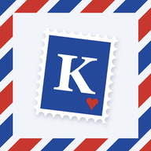

Keepsake
메모와 일기를 내 Google 드라이브에 간직하는 앱
무엇을 하나요
- 메모를 쓰고 폴더로 정리합니다. 아이폰, 컴퓨터 어디서 써도 같은 메모가 보입니다.
- 하루 한 편 일기를 쓰고, 그날의 날씨와 사진을 함께 남깁니다.
- 한 달 동안 일기에 넣은 사진을 우표, 티켓, 스테인드글라스 같은 모양의 앨범 한 장으로 모아 저장합니다.
- 비밀번호로 잠근 메모와 일기는 기기 안에서 암호화한 뒤 저장합니다.
Google 계정으로 하는 일
Keepsake는 메모와 일기를 사용자 본인의 Google 드라이브에 저장하고 불러오기 위해 Google 계정에 로그인합니다.
요청하는 권한은 drive.file 하나로, Keepsake가 직접 만든 파일만 읽고 쓸 수 있으며 드라이브의 다른 파일은 볼 수 없습니다.
일기에서 구글 캘린더 연결을 직접 켠 경우에만 그날의 일정을 읽어 보여 주고, 사용자가 추가한 일정을 캘린더에 넣습니다.
Keepsake는 별도 서버가 없습니다. 메모와 일기는 사용자의 기기와 Google 드라이브에만 있고, 개발자를 포함한 누구에게도 보내지 않습니다.